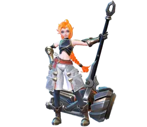
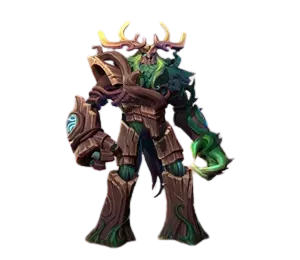

Estratégia sobre Como Jogar com Chang'e
Chang'e é uma poderosa maga em Mobile Legends com grande dano explosivo e habilidades de controle de multidão. Compreender suas habilidades e como usá-las de forma eficaz é fundamental para dominar sua jogabilidade.
Habilidades de Chang'e em Mobile Legends
Passiva: Criadora de Problemas
Cada vez que Chang'e causa dano a um inimigo, ela deixa uma marca neles. Cada marca aumenta o dano de sua próxima habilidade ao inimigo em 2% (até 40%).
1ª Habilidade: Onda de Choque Estelar
Chang'e envia uma esfera de energia na direção do alvo, causando dano mágico aos inimigos em seu caminho e os desacelerando.
Lua Crescente: Envia 4 esferas de energia extras junto com a de Chang'e, cada uma causando dano e desacelerando os inimigos atingidos. O efeito de desaceleração pode se acumular.
2ª Habilidade: Lua Crescente
Chang'e invoca a Lua Crescente, ganhando um escudo e velocidade de movimento. Aprimora as habilidades de Chang'e e permite que seus ataques básicos causem dano mágico adicional.
Reduz o tempo de recarga desta habilidade cada vez que Chang'e causa dano mágico com seus ataques básicos e habilidades.

3ª Habilidade: Chuva de Meteoros
Chang'e dispara 30 meteoros na direção do alvo ao longo de 4s, cada um causando dano ao primeiro inimigo atingido. Causa dano extra a lacaios e monstros. Chang'e também ganha velocidade de movimento durante a duração.
Lua Crescente: Dispara meteoros junto com Chang'e, cada um causando dano.
Dicas para Jogar com Chang'e
- Combo de Habilidades: Comece com Lua Crescente para ganhar o escudo e ataques básicos aprimorados. Siga com Chuva de Meteoros para um grande dano em área. Use Onda de Choque Estelar após Lua Crescente para dano extra e controle de multidão.
- Posicionamento: Fique atrás de sua equipe e use suas habilidades de longo alcance para atacar os inimigos e se manter seguro. Chang'e é frágil, então evite ficar fora de posição.
- Gerenciamento de Tempo de Recarga: Use ataques básicos e habilidades para reduzir o tempo de recarga de Lua Crescente, permitindo que você a use com mais frequência para o escudo e o bônus de velocidade de movimento.
- Controle de Objetivos: O Ultimate de Chang'e causa dano extra a lacaios e monstros, tornando-a ótima para garantir objetivos como Tartaruga e Senhor. Coordene-se com sua equipe para maximizar sua eficácia.
- Itemização: Itens que aumentam o dano mágico e a redução de tempo de recarga são cruciais para Chang'e. Itens como Relógio do Destino, Lâmina Divina e Energia Concentrada podem aumentar muito sua produção de dano.
Dicas Adicionais para Jogar com Chang'e
- Temporização de Engajamento: Chang'e é forte em lutas em equipe prolongadas, onde ela pode aplicar continuamente dano e controle de multidão. Procure oportunidades para se envolver quando o inimigo estiver agrupado para maximizar a eficácia de suas habilidades em área.
- Consciência dos Inimigos: Fique de olho nos movimentos e habilidades dos inimigos, especialmente habilidades de controle de multidão. Chang'e é vulnerável ao controle de multidão, então tente evitar ficar preso neles mantendo uma distância segura.
- Consciência do Mapa: Preste atenção ao mapa e aos objetivos. Chang'e pode limpar rapidamente ondas de lacaios e fornecer suporte em lutas em equipe, mas esteja pronto para rotacionar para ajudar a garantir objetivos quando necessário.
- Combinação com Companheiros de Equipe: Chang'e funciona bem com heróis que podem se engajar e perturbar a equipe inimiga, como tanques ou lutadores. Coordene-se com sua equipe para encadear suas habilidades para um impacto máximo.
- Adaptação: Ajuste sua construção e estilo de jogo com base na composição da equipe inimiga. Se eles tiverem muitos controles de multidão, considere itens como Imortalidade ou Escudo de Atena para aumentar a sobrevivência.
Ao dominar as habilidades, o posicionamento e a coordenação de equipe de Chang'e, você pode se tornar uma força formidável no campo de batalha em Mobile Legends. Pratique suas mecânicas, mantenha-se ciente do ambiente ao seu redor e esteja sempre pronto para se adaptar ao fluxo sempre mutável do jogo.
Chang'e: Pontos Positivos e Negativos
Pontos Positivos
- Dano à Distância: Chang'e se destaca em causar dano à distância, permitindo que ela ataque os inimigos e permaneça relativamente segura durante as lutas em equipe.
- Escudo: Sua habilidade Lua Crescente fornece um escudo, concedendo-lhe uma sobrevivência extra nas batalhas.
- Velocidade de Movimento: Chang'e pode ganhar aumento de velocidade de movimento a partir de suas habilidades, ajudando-a a manobrar pelo campo de batalha e escapar de situações perigosas.
- Melhoria nas Habilidades: Sua habilidade Lua Crescente aprimora suas outras habilidades, tornando-as mais eficazes em combate.
- Forte Contra Lord e Tartaruga: O Ultimate de Chang'e, Chuva de Meteoros, causa dano extra a lacaios e monstros, tornando-a valiosa para garantir objetivos como Lord e Tartaruga.
Pontos Negativos
- Pouca Defesa: Apesar do escudo de Lua Crescente, Chang'e carece de habilidades defensivas significativas, tornando-a vulnerável a dano explosivo.
- Fraca Contra Assassinos: A baixa defesa de Chang'e e a falta de habilidades de mobilidade a tornam um alvo fácil para assassinos que podem fechar rapidamente a lacuna e eliminá-la.
Compreender esses pontos fortes e fracos pode ajudá-lo a jogar com Chang'e de forma mais eficaz, focando em seus pontos fortes enquanto mitiga suas vulnerabilidades.
Change em Batalhas
Melhores Aliados:
Na batalha, Chang'e se sai muito bem com aliados tanques (Tigreal, Atlas, Hylos, Minotauro, Lolita e Grock), com a capacidade de concentrar inimigos em um único lugar. Dessa forma, Chang'e pode usar sua segunda habilidade para fortalecer seu Ultimate e causar muito dano aos inimigos de uma só vez.
Forte Contra
Pharsa, Valir, Beatrix
Chang'e Melhores Counters
| Counters | O que acontece |
|---|---|
 Lolita |
A habilidade Reflexo da Guardiã de Lolita cria um escudo que reflete os danos da Ultimate de Chang'e |

|
Minsitthar cria um escudo que reduz o dano recebido e causando 80% de lentidão nos inimigos, dessa forma Chang'e não consegue usar sua Ultimate eficazmente. |
 Belerick |
A habilidade passiva de Belerick reflete o dano recebido de volta a unidade inimiga em linha reta, causando dano em Chang'e quando usa a Ultimate. |
Melhores Combos de Chang'e em Mobile Legends
Combo 1: Sequência de Execução
- Use a Segunda Habilidade (Lua Crescente) para ganhar escudo e velocidade de movimento.
- Siga com um Ataque Básico para acionar o efeito de ataques básicos aprimorados do escudo.
- Use a Primeira Habilidade (Onda de Choque Estelar) para desacelerar inimigos e preparar para o ultimate.
- Use o Ultimate (Chuva de Meteoros) para causar dano massivo aos inimigos agrupados.
Combo 2: Sequência de Execução
- Comece com um Ataque Básico para acionar o efeito de ataques básicos aprimorados do escudo.
- Use a Segunda Habilidade (Lua Crescente) para dano adicional e velocidade de movimento.
- Use o Ultimate (Chuva de Meteoros) para desencadear uma saraivada de meteoros nos inimigos.
Combo 3: Sequência de Execução
- Use a Segunda Habilidade (Lua Crescente) para ganhar escudo e velocidade de movimento.
- Siga com o Ultimate (Chuva de Meteoros) para causar dano em área massivo.
- Use Chamas para eliminar inimigos com pouca vida ou garantir abates.
Dominar esses combos e entender quando usá-los pode melhorar significativamente sua eficácia com Chang'e nas batalhas. Experimente diferentes sequências e adapte-se à situação para maximizar seu impacto no campo de batalha.
Change Melhores Feitiços
Flamejante: O melhor feitiço de batalha de Chang'e é o Flamejante, ideal para eliminar um inimigo que tenta fugir com pouca vida, ou para afastar um assassino que tenta se aproximar na batalha.
Feitiço: Flamejante

Uso: Ideal para finalizar inimigos tentando fugir com pouca vida ou afastar assassinos tentando se aproximar na batalha.
Feitiço: Flash

Uso de Flash: Fornece a Chang'e um mecanismo de fuga adicional ou uma ferramenta de reposicionamento, permitindo que ela se reposicione rapidamente em situações difíceis ou evite ataques inimigos.
Feitiço: Avançar

Avançar Uso: Concede a Chang'e mobilidade aumentada, permitindo que ela atravesse rapidamente o campo de batalha ou escape de situações perigosas. Flash também pode ser útil para se envolver ou desengajar de lutas em equipe.
Escolher o feitiço certo para Chang'e pode impactar significativamente seu desempenho em batalhas. Considere o fluxo da partida e a composição da equipe inimiga ao selecionar um feitiço e adapte sua escolha para melhor se adequar à situação em questão.
Melhores Builds e Emblemas para Chang'e
Emblema: Fúria Impura
Benefícios: O emblema Fúria Impura é excelente para restaurar mana, o que é crucial para Chang'e, já que ela depende muito de suas habilidades. Este emblema ajuda-a a manter sua reserva de mana, permitindo que ela permaneça em batalha por mais tempo sem precisar retornar à base com frequência.
Builds:
-
Itens Principais:
- Talismã Encantado: Oferece redução de tempo de recarga e regeneração de mana, essenciais para usar habilidades repetidamente.
- Sapatos Mágicos: Proporciona redução adicional do tempo de recarga, permitindo que Chang'e lance suas habilidades com mais frequência.
- Relógio do Destino: Aumenta a mana e o poder mágico ao longo do tempo, tornando Chang'e mais resistente e aumentando sua produção de dano.
- Adaga Divina: Aumenta a penetração mágica, garantindo que as habilidades de Chang'e causem um dano significativo aos inimigos.
-
Itens Opcionais:
- Cajado da Rainha de Gelo: Adiciona um efeito de lentidão às habilidades de Chang'e, facilitando atingir os inimigos e controlar o campo de batalha.
- Tempo Fugaz: Fornece redução adicional do tempo de recarga e reinicia o tempo de recarga do Ultimate de Chang'e quando ela consegue uma eliminação ou assistência, permitindo que ela o use com mais frequência em lutas em equipe.
- Cajado Fulgurante: Causa dano de queimadura ao longo do tempo, aumentando ainda mais a produção de dano de Chang'e e a pressão sobre os inimigos.
Personalizar a build de Chang'e para se adequar ao seu estilo de jogo e às necessidades da partida pode aumentar significativamente sua eficácia no campo de batalha. Experimente diferentes itens e emblemas para encontrar a melhor combinação para o seu estilo de jogo.

Conclusão do Guia da Chang'e
Dominar as habilidades da Chang'e e entender o papel dela na equipe são essenciais para o sucesso no Mobile Legends. Pratique suas combinações, mantenha-se atento à sua posição e trabalhe com sua equipe para garantir a vitória no campo de batalha.
 Arlott
Arlott Dyrroth
Dyrroth Floryn
Floryn